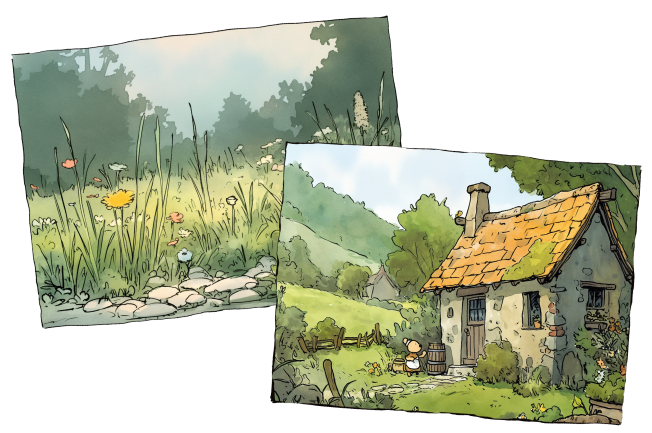

Ink line drawing with loose watercolor wash, wet-on-wet pigment bleed, soft blurred edges where colors meet, thin sketchy pen linework, muted sage green, ochre, and warm beige color palette, classic British storybook illustration style, in the style of Beatrix Potter and Winnie the Pooh illustrations, spontaneous loose brushwork —profile 4f1m1zo —niji 6 —stylize 250 —ar 4:3
—profile 4f1m1zo : 사전에 구축한 무드보드를 참조하여 그림체를 일관되게 유지
—niji 6 : 일러스트 표현에 특화된 모델 사용
—stylize 250 : 스타일 반영 강도 조절
—ar 4:3 : 동화책 편집에 적합한 화면 비율 적용